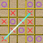

Tic Tac Toe Wild Free
(Try the wild combinations)

Category: Games Subgenre: Puzzle & Trivia Current Version: 1.1
Download
Detailed description
Tic Tac Toe Wild Free, lets you play some wild board combinations in addition to the classic 3x3. The 4x5, 5x4 and 5x5 boards require you to get 4 in row and are fun to play with others. If played optimally combinations like 3x4, 4x3, 3x5 and 5x3 allow the player playing first always win but they are available for fun and learn logic for kids. Please check out the trial version for yourself. The game is highly customizable with the following options.
• Single Player and Two Player modes
• Ability to play multiple combination boards from 3x3 to 5x5
• Easy, Medium and Hard modes. Easy mode is for kids, Medium will make you work harder. Hard mode is available only in 3x3, 3x4, and 4x3 grids to make the game responsive.
• Customizable player names
• Ability to specify who plays first
• Score tracking
• Sound On/Off
• Reset Score feature, if you like to start the scores all over again
• Ability to specify whether to play taking ‘Alternate Turns’ or Fixed Turns
Version Updates
Version 1.1 has the following
• Added a new mode Medium, in addition to Easy and Hard